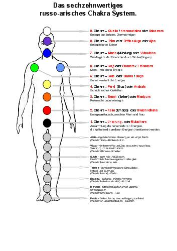
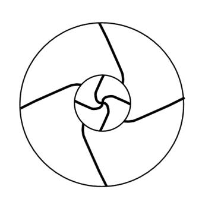
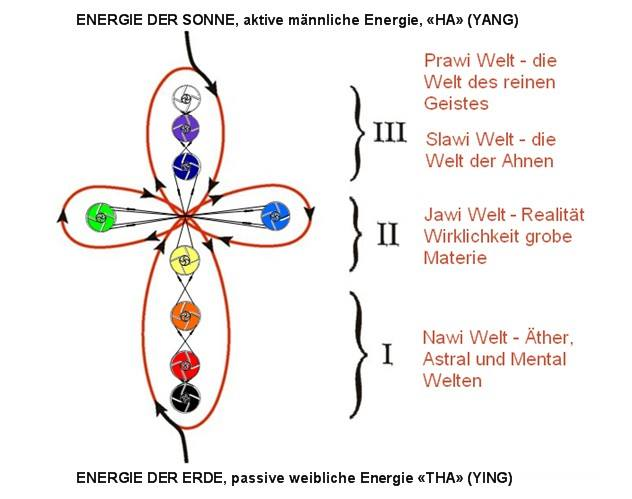

Das sechzehnwertiges russo-arisches Chakra System.
Die alte wedische Weisheit trug immer zur harmonischen Entwicklung des Menschen bei, d.h. der Entwicklung seines Körpers, des energetischen Systems, seiner Seele und des Geistes, sowie des Gewissens. Da es für das weitere Leben in den höchsten energetischen Strukturen notwendig ist, steht am Anfang seiner Entwicklung, das Lernen und Verstehen der Welt die ihn umgibt, das heißt - sich als das mehrstrukturelle System zu sehen, dass aus dem Ursprungelement besteht (der Energie, die in verschiedener Qualität vorkommt) und in sich die vielseitige Facetten des Weltalls trägt.
Unsere Vorfahren wussten, dass die Materie eine dicht konzentrierte Energie in verschiedenen Erscheinungsformen ist und dass ein beliebiges materielles Objekt seine eigene energetische Dichte hat. Seinerseits besteht der Mensch aus der Gesamtheit der Energien mit verschiedener Dichte, verschiedener Wellen und verschiedener Frequenzen. Das heißt: die am dichtesten konzentrierte Energie ist das Skelett des Menschen, weniger konzentriert - das Muskelsystem, das Blut, das Nervensystem usw. Noch weniger ist das energetische System (das Biofeld, Chakren und die energetische Körper) konzentriert. Und diese Systeme sind miteinander verbunden, d.h. die Dreieinheit oder Dreifaltigkeit des Geistes, der Seele, und des Körpers. Außerdem bei einem harmonischen Menschen existieren: der Charakter – die Willenstärke, das Charisma – der Stammgeist, die Seele und das Gewissen. In der modernen Welt berücksichtigen die Menschen die ganze Komplexität des Baus des Menschen nicht. Einige Menschen beschäftigen sich mit der Verbesserung des physischen und energetischen Systems, aber die Geistige Grundlage und das Gewissen ganz vergessen. Genau so, halten sich viele nur für die grobe Materie (den Körper) und leben nur für die Befriedigung der Instinkte. Aber unsere Vorfahren nahmen den Körper wahr, wie die bioorganische Kleidung für die Existenz in der offenbaren Welt der Jawi. Hier lernt der Mensch zu schaffen, die Schöpfung, die Gedanken und die Ideen im Leben zu verwirklichen und sie zu materialisieren.
Es ist die Zeit gekommen über die Chakren der wedisch, slawisch-arischen Weltwahrnehmung zu erfahren.
In der russischen Rede, ist der Geist – „ER“ ist männlicher Anfang (Energie), die Seele – „SIE“ ist weiblicher Anfang (Energie) und der Körper – „ES“ ist neutral. Der Geist wird vom Mann und die Seele von der Frau weiter gegeben, die den Körper als Hütergefäß für Geist und Seele gebären.
Jeder Mensch hat Körper, Geist und Seele. Und in der Familie sieht es so aus: ein Mann hat Körper, Geist und Seele so sind wir bei 3, eine Frau hat Körper, Geist und Seele noch mal 3 und ein Kind hat auch Körper, Geist und Seele, also noch mal 3 und zusammen ergibt es 9, das heißt 1 (Mann) plus 1 (Frau) gleich 3 (Kind) und mal 3 (je Körper, Geist und Seele) gleich 9 und so kommen wir zum Neunwertigen – System oder 9 - Chakren –System der russo-arischen Völkern.
In den Überlieferungen der Kosaken wird folgendes über Chakren gesagt:«Es leben auf dem Menschen neun göttliche unsichtbare Wesenheiten (es werden die energetischen Hauptzentren der Aura gemeint), allen zusammen leben in Eintracht zugleich. Weil zwischen ihnen eine mächtige Verbindung besteht. So erscheint über den Kopf jenen Menschen eine blaue „Vril“ (übernatürliche Energien) gelber Kontur, welche auf den Ikonen gemalt wird. » ( A.Sokulskiy)
Die 9 ist eine heilige Zahl, seine Bedeutung – ist die volle Entwicklung, die Ganzheit. In Russia gab’s früher 9 Monate im Sommer (Jahr), 9 Tage in der Woche, 9 Primärfarben, 9 Hauptchakren. Dieses System – das System des Menschen - ist ein System des Tchelaweka (des Menschen) – „TCHE“ bedeutet Energie des Lebens, „LA“ Seele in der Dreifaltigkeit und „WEKA“ heißt Ewigkeit. Die Energie der Seele und des Geistes leben ewiglich. Warum gibt es gerade die 16 Einstellungen auf die nötigen Wellen der Wahrnehmung?
Die Dreieinheit (Dreifaltigkeit) der Harmonien des Geistes, des Körpers und der Seele ist der Anfang, die Fortsetzung und die Wiedergeburt des wedischen Wissens. Die wedische Weißheit teil ihr Wissen mit allen, nur nutzen kann sie nicht jeder Mensch, weil alles von der Reinheit der Absicht abhängt, die es ermöglicht näher zum verlorenen Wissen, welches Körnchen für Körnchen bis Heute gesammelt und aufgespart war. Die Verbindung zwischen Mensch und Universum ist psycho- telepathisch, das Senden und Empfangen der Gedanken, der Gefühle und der Informationen erfolgt auf den Wellen von 9 bis zu 16 Mikrometer (µm, eine Längeneinheit von 10−6 m) bei der Stärke von 1 Watt (eine Einheit der Leistung) in der unbeschränkten Entfernung. Die energetischen Verbindungen mit unseren Urahnen-Göttern werden von der Seele und den Geist nur dann hergestellt, wenn die REINEN ABSICHTEN, die SELBSERKÄNNTNISS, die EHRE und das GE – WISSEN vorhanden sind.
Es gibt im Russischen folgende Volksagung «ein Pud Salz gegessen». Was bedeutet das? Wie wir es wissen, um einen Menschen gut erkennen zu können, müssen wir viel Zeit und die gemeinsamen Taten mit ihm vollbringen. «Salz» ist das Wissen und dieses Wissen zeigt auf, ob der Mensch jenes besitzt und damit umgehen kann. Auch von allem im Russland das bekannte russische Maßeinheit des Pudes das Gewicht - 1 Pud = 16 kg. So mit sind wir an die nächste Schlüsselfrage angekommen: warum gerade 16 und was steht dahinter? Und wieder kommen alle Antworten zu uns aus den Tiefen der alten Weden des Familienstammes. Jeder Mensch nimmt die Umwelt mit Hilfe der energetischen Kanäle der Wahrnehmung wahr. Alle Kanäle der Weltwahrnehmung arbeiten gleichzeitig und versorgen den Menschen mit den für ihm notwendigen Informationen. Das System der Wahrnehmung der Slawen kann man auch 16 - strukturell vorstellen.
Früher hatte ein russischer Tag nicht 24, sondern 16 Stunden und im einheitlichen Sterzeichenkreis, Jahreskreis existierten 16 Sternzeichenhäuser. Im Unterschied zum östlichen Horoskop von 12 Sternbildern, gab es bei unseren Urahnen der Göttliche Swarogkreis. Es ist der Himmlische Weg auf dem sich unsere Jarilo-Sonne bewegt, die durch die 16 Himmlischen Sternzeichenhäuser gehet:
|
№ |
Die himmlischen Sternzeichenhäuser |
Die Beschützer – Götter |
|
1 |
Jungfrau |
Dschiwa |
|
2 |
Wildschwein |
Ramchat |
|
3 |
Hecht |
Rodschana |
|
4 |
Schwan |
Makosch |
|
5 |
Schlange |
Semargl |
|
6 |
Rabe |
Waruna |
|
7 |
Bär |
Swarog |
|
8 |
Busl - Storch |
UR AHN - ROD |
|
9 |
Wolf |
Weles (Veles) |
|
10 |
Fuchs |
Marena |
|
11 |
Taurus - Stier |
Kryschen (Krishna) |
|
12 |
Elch |
Lada |
|
13 |
Finist - Falke |
Wyschen ( Vishnu) |
|
14 |
Pferd |
Kupala |
|
15 |
Adler |
Perun |
|
16 |
Rassa |
Tarch |
Daraus folgt, dass bei dem slawisch-arischen Volk existiert sein eigenes geistig-energetisches Feld, das wie ein strahlender 16-dimensionaler informations-energetischer Kokon aussieht, der sich außer der materiellen Zeit und des Raumes befindet (die Projektion seiner Erscheinungsform wird in 4 Dimensionalen darstellt: die Länge, die Breite, die Höhe und die Zeit. In der materiellen Welt erinnert uns diese Form an die 9 in verschiedenen Regenbogenfarben leuchtenden energetischen „Matröschkas“ (die russische Puppe), welche in einander gelegt, bilden neun mächtige swastische, energetischen Wirbeln. Die Weiteren 7 Chakren liegen im Bereich der Beine, also wenn wir die 9 bereits erwähnten Hauptchakren und 7 Chakren im Beinbereich addieren kommen wir auf 16 Chakren. Vielen sind schon bereits mit den östlichen Lehren von 7 Chakren vertraut und nun taucht die Frage auf: welche Chakren und welche Farben sind hier zusätzlich erschienen? Und als Verstärker dienen die zusätzliche Chakren Lada und Lelja, die uns mit weiblichen und männlichen Vorfahren (Energien) verbinden. Die linke Chakra Lelja ist für die weibliche Energie und die Verbindung mit der Mutter, der Großmutter und der Urgroßmutter verantwortlich. Und die rechte Chakra Lada ist für die männliche Energie und die Verbindung mit dem Vater, dem Großvater und dem Urgroßvater verantwortlich. Sie sind sehr wichtig und genau das meinte der Jesus als er sagte: „sein Kreutz tragen“, es ist das geistig-energetisches, slawisch-arisches Kreuz. Genau so wichtig sind die zwei zusätzlichen Farben: weiß (der Ultralaut – die hohen Frequenzen) und schwarz (der Infraschall – die niedrigen Frequenzen). Diese geben uns die richtige und harmonische Wahrnehmung der Welt.
Das Hauptwesen ist hier – die Annahme der Einheit der Gegensätze.
Die Weiteren 7 Chakren, die im Bereich der Beine, stellen die Verbindung mit unserer Erde dar. Die Erde ist lebendig, sie ist Mutternatur und ist für die Erdung zuständig. Es gibt folgende Redewendung „ die Seele ist in die Fersen gerutscht“, das heißt wenn ein Mensch Angst hat rutscht seine Energien runter. Unsere Mutter – Erde – Natur nimmt alles in sich auf und die untere 7 Chakren sind für dies zuständig. Auf der Fußsole befinden sich Akupunkturpunkte von allen Organen und ein Mensch berührt die Erde mit der Sole. Deshalb haben unsere Ahnen so die Natur geschätzt, weil sie wüsten, das die Erde, das Wasser, der Feuer, die Lüft und jeder Baum, jeder Stein haben sein Geist und seine Seele und deswegen verbinden uns die Beine auch mit der Natur, der Naturgestern und Naturwesen.
Schauen wir uns die Abb. 1 an und wir werden die Anordnung der 9 Chakren und weiteren 7 Chakren sehen, d.h. den vollen Kreis aus wesentlichen 16 Chakren:

Abb. 1
Die Anordnung der 5 und 6 Chakra sind deswegen wichtig, weil die 5 Chakra - Lada – „Surja (Surya)“ - die Sonne – verbindet uns mit dem männlichen Stammesanfang und die 6 Chakra – Lelja „Chandra (Tschandra)" - der Mond - verbindet uns mit dem weiblichen Stammesanfang. Der Mann in dem wedischen Verständnis unserer Vorfahren war der Sammler, der Beschützer und dem Träger der Weisheit und die Frau resorbiert, bewahrt und multipliziert die schöpferischen Kräfte der Natur.
Der Mann hat außer der Weisheit, die ihm erlaubt richtig die Gesetze der Welt Prawi (die Welt des reinen Geistes) – die Verwaltung der Welt zu verstehen, besitzt auch die Kunst des Werkes, das heißt von jener Energie, die die nährende Früchte für den Menschen trägt. Dem Mann gehören die Prawi Welt und die Jawi Welt (Welt der Wirklichkeit), deshalb auf der sehbaren Vertikale des Daseins ist er oben, aber ohne schöpferische Kraft der Natur-Frau wäre die Jawi Welt (Wirklichkeit) nicht da, aber auch die Welt der Prawi hätte sich für nicht nötig erwiesen. Deshalb sind der männlicher und der weiblichen Anfang gleichwertig und äquivalent, jedoch sind nach ihrer Bestimmung verschieden. Ohne solchen Unterschied kann das Einverständnis nicht vorhanden sein, das heißt es ergibt „die Wurzel für den Chor der Einheit“ aus der Gegenwart und der Zukunft (siehe russo-arischen Runen-Alphabet). Wenn ein Mann einer Frau begegnet, ist er verpflichtet den Kopf zuneigen oder die Kopfbedeckung abzunehmen, um vorzudeuten das er seine Stelle im allgemeinen Einverständnis anerkennt und sich nicht für mehr bedeut hält. Das hat auch die Wichtigkeit der gleichen Wahrnehmung der Stammesgeschlechter, so wie väterlicher Seite, als auch der mütterlichen Seite. Und auch hier wieder haben wir die Einheit der Gegensätze!
Die Arbeit allen 16 energetischer Kanäle der Weltwahrnehmung ist sehr wichtig, um zu lehren bildlich zu denken, um die Möglichkeit zu erwerben die Menge der Informationen aus der Umwelt zu filtern, außerdem die Möglichkeit haben das riesige wedische Wissen zu nutzen, das man nicht in Außen findet: «Gehe dorthin – weis nicht wohin und bringe das – weis nicht was.» Diese Redewendung wird oft in den russischen Volksmärchen angewendet. Es bedeutet, das der Mensch innerhalb sich selbst, in seinem Inneren das Aufbewahrungsort des Stammgedächtnisses findet, wo die Erfahrung vom alten Geschlecht und dem ganzen Familienstamm befindet und das Wissen von allen Generationen enthalten ist.
Sowohl slawische, als auch östliche energetische Systeme sind auf den verschiedenen Wechselwirkungen der energetischen Ströme aufgebaut. Jede hat eine andere Farbe, Laut, Spektrum, Frequenz, sowie eigene energetische Farbe in Energiezentren des Körper eines Menschen. Dieses energetische Zentrum trägt bis Heute, die alte slawische Bezeichnung: Chakra (russ. Чакра). Chakra - (Chak - Ra), Chаk - bedeutet ein Kreislauf zu zwei Seiten, d.h. die Aufnahme und die Ausgabe der Energie und Ra - bedeutet das reine Licht. Dieses Rad des doppelten Drehens kann man auf folgende Weise strukturell darstellen. (Abb. 2)

Abb.2
Die energetische Struktur jedes Chakra hat ihre eigene Gestalt. In jeder gibt es den Punkt der Füllung (Eingang) der Energie und den Punkt des Ablaufes (Ausgang), wodurch die Energie in diese oder jene Organe des Körpers des Menschen fließen kann. Jedes Chakra speist bestimmte Organe und gibt ihnen die Energie. Diese energetischen Kreise (Punkte) kann der Mensch aktivieren und je nach Bedarf die energetischen Ströme auf ein bestimmtes Organ verstärken oder schwächen. Genau so, hat jedes Chakra eine entsprechende Farbe und Ton.
Der Mensch produziert die Energie – aus dem Kosmos, der Sonne, des Mondes, anderen Erden, aus der Luft, dem Wasser und der Nahrung. Auch bekommt er die Energie von außen - aus dem Universum von der Sonne und dem Mond. Die Bewegung der steigenden und absteigenden Ströme (Abb. 2). und diese Energie steht in Wechselwirkung mit den Chakren.

Die 9 Chakren werden, wie folgend unterteilt:
- Chakren der niedrigen Energien (die Welt Nawi - Äther, Astral und Mental Welten)
- Chakren der mittleren Energien (die Welt Jawi – Wirklichkeit grobe Materie (Realität))
- Chakren der hohen Energien (die Welt Slawi (Ruhme) - die Welt der Ahnen)
- Chakren der sehr hohen Energien (die Welt Prawi - die Welt des reinen Geistes)
Die ersten drei Chakren: 1. Ursprung; 2. Keim; 3. Bauch - nehmen die Energie aus der Nawi Welt (niedrige Energie): Diese Chakren beeinflussen den strukturellen Zustand der physischen Hülle des Menschen. Einige Menschen leben ihr Dasein nur mit diesen drei Chakren. Diese Menschen lebend ihre primitive Instinkte (schlafen, essen, trinken, usw.), d.h. wie die Tiere.
Die folgenden drei Chakren: 4. Persi; 5. Lada; 6. Lelja - gehören zur Jawi Welt. Das erfolgreiche Wirken in der Jawi Welt ist nur dann möglich, wenn bei den Menschen die Chakren 4, 5, 6 harmonisch entwickelt sind. Der Mensch, der auch diese Chakren lebt, wird als „seelischer“ Mensch bezeichnet.
Die Folgenden Chakren: 7. Mund; 8. Stirn; 9. Quelle - gehören sich zur Slawi Welt (hohen und sehr hohe Energien) und sind für den Geist verantwortlich. Wenn beim Menschen alle Chakren, die höchsten mit eingeschlossen gut arbeiten, so nennt man ihn "Geistiger Mensch". Der Mensch, der nur mit den drei höchsten Chakren lebt und die andern nicht entwickelt und verwendet, wird in der Regel zum Einsiedler. Er ist von der Welt getrennt und das macht ihn zum unharmonischen Menschen. Die unteren energetischen Zentren speisen die Oberen, deshalb haben sich die Slawen harmonisch entwickelt und verwendeten immer alle Zentren (Chakren):
- Die unteren Chakren gewährleisten die Verbindung mit der Natur;
- Die seelischen verbinden mit anderen Menschen;
- Die geistigen ermöglichen auf die Welt von der Seite her zu blicken und sich der Strukturen hinter unserer offenbarten Welt bewusst zu sein.
Die alte wedische Weisheit muss man nicht nur vom Verstand erkennen, sie muss man ins Herz übernehmen und jedes Bildnis (Gestalt, Symbol) verinnerlichen. Aber auch nur dann, wenn die Informationen (die Ansammlung von Charakteristiken und gibt nicht das volle Wissen) durch das Herz, die Seele, die Vernunft, den Verstand, den Geist, die Lebenserfahrung und es zu der Lebensweise wird, dann werden die Informationen zum wedischem Wissen. Denn der irdische Mensch ist ein mehrstrukturelles System, das folgendes hat:
- die Zweidimensionale Verständnis - das System des Lernens und des Erkenntnisprozesses
- der Dreidimensionale Körper - existierend in der vierten Dimensionen und der Zeit
- die Sechzehndimensionale Vernunft - das System der Verkörperung und des Schöpfens
- die Multidimensionale Seele
- Unermessliche (unendlicher) Geist
Für die volle Entwicklung muss der Mensch das Gewissen haben, d.h. das äußerliche Licht, das nach innen durchdringt und jene Augenblicke des Lebens des Menschen und seine Strukturen Beleuchtet. Den Körper wird von der Seele verwaltet, die Seele wird von dem Geist verwaltet und den Geist wird vom Gewissen verwaltet.
- Das materialistische System der Weltwahrnehmung verwenden die Menschen der ersten Kategorie der Entwicklung – «dreiwertigeres System» (Menschen die mit drei Chakren leben) – der Bewohner, Einwohner, Mitbewohner, so nannten sie unsere Urahnen. Diese nutzen nur die niedrigsten Chakren und die übrigen wurden nicht entwickelt. Das grundlegendes Denken – der Materialist, ist vom seinem Wesen ein Sklave der Materie. Dieser altert schnell, da er die zusätzliche Energie aus dem Kosmos nicht bekommt. Bei solchen Menschen fehlt die Verbindung mit dem Stamm, er ist sterblich, d.h. lebt nur einmal, ohne die Möglichkeit auf die Wiedergeburt in der Jawi Welt zu haben. Dieser gerät nach dem Tod in die noch niedrigen Welten, deshalb wird er „Einmallebender“ genannt.
- Der Seelischer –siebenwertiger Mensch gehört zum idealistischen System – (Menschen die mit sieben Chakren leben) – Leute, so nannten sie unsere Urahnen. Er Herr seines Körpers, und nicht sein Sklave. Der Mensch, der seine oberen Chakren entwickelt hat, wird zum Mitschöpfer. Die Basis seines Denkens – ist die Idee, der Gedanke, und er kann erschaffen und Schöpfer sein. Dieser Mensch beginnt, über den Geist, die Seele nachzudenken, wird fühlig, sinnig und lebt auf der Niveau der Gefühle. Er ist hingabefähig (selbstaufopfernd), er ist vielfältig begabt, was der mateartistische Mensch nicht ist. Solch ein Menschentyp befindet sich auf der Grenze zwischen dem „Geistigen Leben“ und dem „ Tod“. Für welche Seite er sich entscheiden wird und in welche Richtung er auch geht, hängt ganz von ihm ab. Über solche Menschen wird gesagt, dass ihnen die Freiheit der Wahl (Freierwahl) gegeben ist, d.h. sie haben die Möglichkeit nach dem physischen Tod, den Weg der Geistigen Entwicklung zu gehen oder zu degradieren, sprich auf das niedrigere Niveau herabzufallen. Solchen Menschen werden „Zweimalgeborener“ genannt.
- Das Geistig - Transzendentes System der Weltwahrnehmung – des „neunwertigen“ Menschen, bei dem die neun Chakren in Harmonie sind. „TSCHELOWEK“ (russ. „ЧЕЛОВЕК“) auf Deutsch MENSCH, „TSCHELO“ ist die Stirn (der Gedanke) und „WEK“ ist das Jahrhundert (die Zeit), d.h. der Denkender in der Zeit ist unsterblich. Mit den harmonisch entwickelten energetischen Zentren, kennt er die Unsterblichkeit seiner selbst, der Umwelt und der anderen Welten. Zum diesem Niveau der Entwicklung gehören alle Vertreter der slawisch-arischen Völker, die nach den Gesetzen der Vorfahren in der Harmonie mit beiden großen Anfängen (männlich und weiblich) lebten.
- Die Menschen, die alle sechszehn Chakren verwalteten sind mit allen sechszehn Sternenhäusern (Sternensystem) frei verbunden. Sie bekommen die volle Entwicklung in einem familiärem Bündnis (wo nicht weniger als drei Kinder gibt). Dieser Mensch entwickeln sich in Dreieinheit (Dreifaltigkeit) mit den Ahnen – ein AS (der Raum der Vernunft und des Gewissens), d.h. der Gott, der auf der Erde lebt.
Die Natur hat bei der Aktivierung aller energetischen Zentren, hat das System des Alterns im Menschen nicht programmiert.